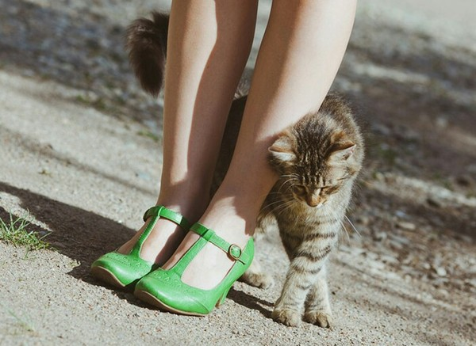
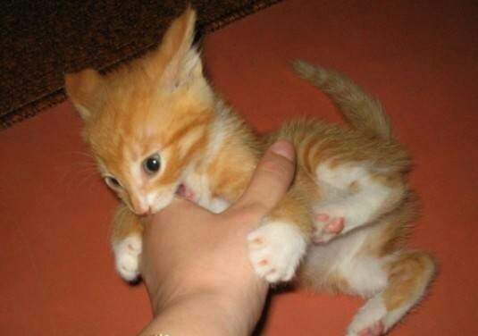
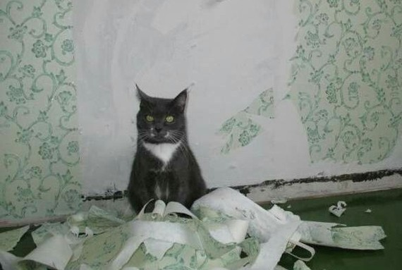
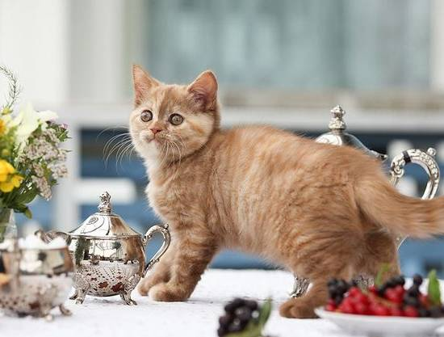
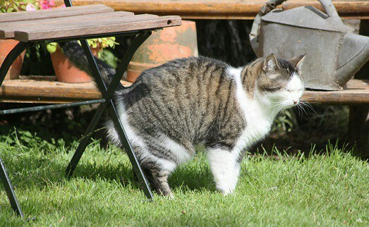
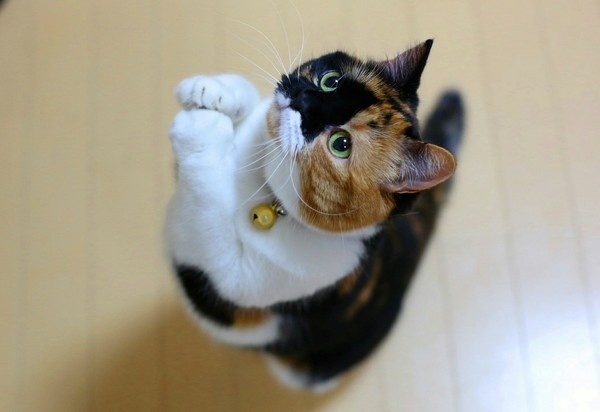
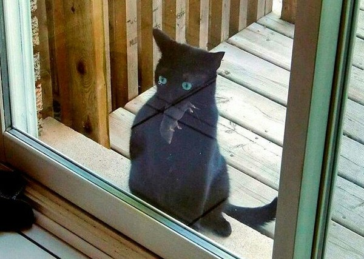
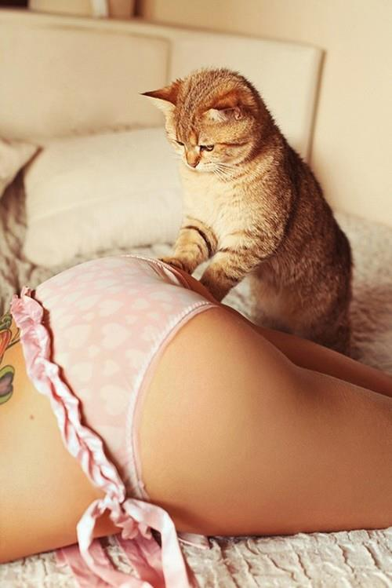

Behavior and habits of cats
All know that cats very independent creations. Still Richard Kipling noticed it and correctly defined their living position: "I am a cat, I walk in itself and I do that, that I want!" Here with it "I do that there is a wish" constantly owners face also do not know how to react to manifestation of features of character of the favourite.
The cat gets under feet
It seems to you that it interferes with you, and actually, thus the cat expresses to you the love and attachment. It is so put in the nature of cat's and other animals that on a smell they distinguish personal and others'. When the cat approaches and begins to rub about legs, he simply marks you and establishes the right for you for other animals – "Mine! Hands and paws not to touch!".
The cat bites and scratched
Cat – a predator. And it is never impossible to forget about it. Therefore kittens always play hunters. Sexual requirement can become the reason of the raised kusuchesta also. Especially it is shown at kittens-boys.
The cat tears furniture and wall-paper by claws
Very few people from owners of cats like "terry" sofas and chairs therefore if your cat constantly tries to give new shape of upholstered furniture, it is worth undertaking education of the favourite. But it is soft and quiet. Cats tear up furniture and wall-paper not because they like to bring you to a white knee is the just put program for designation of the territory.
The cat walks on tables
First, from the point of view of a cat, he not on tables goes, and inspects the territory. Secondly, on tables sometimes something very tasty comes across. Therefore the cat does not see the reasons not to go.
The cat marks the territory
Often a cat begin to mark the territory that is natural, does not please owners. The reason of such behavior lies all in the same place - it is an instinct.
The cat constantly asks food
And this habit entirely merit of owners. Once once the pity gives in, at the sight of mournful expression of a muzzle – and all. Cats very clever animals are also able to manipulate with dexterity of the diplomaed psychotherapist.
The cat brings you "presents"
Cats like to bring to owners of dead mice, birds, lizards and insects. Even after "Is not present," pets will continue to present thanks you. It is absolutely normal, this manifestation of care and love. From where to a cat know what people do not eat dead rodents and bugs?
The cat rumples something by pads
Cats like to climb up knees and to massage to favourite owners of a leg. Such behavior – a strong indication of trust. The cat shows that he feels in safety that to it it is cozy and quiet. Such behavior is put in the pet since the childhood when he, being a little kitten, with love massed tiny pads a soft fluffy stomach of mother cat, regaling on a tasty milk.